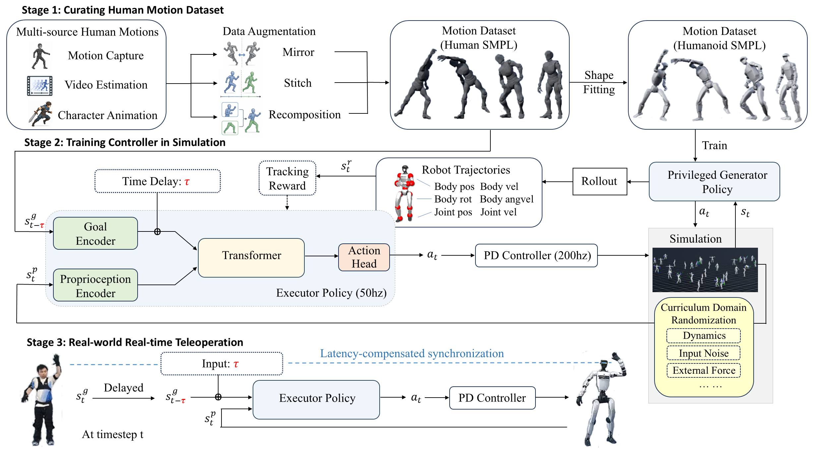

Diverse whole-body motion
A unified framework for agile, expressive human-to-humanoid motion tracking.
Turning humanoid robots into embodied avatars that mirror diverse human movements in real time.
Westlake Robotics × Westlake University
A unified framework for agile, expressive human-to-humanoid motion tracking.
Anticipation compensates for delay to bring human and robot motion closer in time.
Demonstrated on Unitree G1 and adapted to Westlake O1 through fine-tuning.
First released on September 29, 2025. One year later, we share the research behind the system.
Our first demo introduced GAE as the world's first large general-purpose controller for humanoid robots, demonstrating real-time whole-body control with low latency. GAE enables humanoid robots to act as humanoid avatars of their operators, mirroring a wide range of human movements.
Watch the previous demo on Bilibili ↗The first public demonstration · September 2025
From expressive gestures to dynamic movements, GAE enables humanoid robots to mimic the operator's whole-body motion in real time.
Human operators guide the robot through everyday interactions, combining whole-body movement with object manipulation.
Latency-conditioned anticipation compensates for end-to-end delay. Two robots track the same human motion simultaneously, making the effect on synchronization directly visible.
Anticipation reduces the visible response lag between the operator and the robot.
GAE brings together multi-source motion data, two-stage policy training, and latency-conditioned anticipation.

Human motions from videos, animations, and motion capture are standardized and augmented to broaden behavior coverage.
A privileged generator produces feasible humanoid trajectories. These trajectories provide training targets for an executor trained under domain randomization.
The executor receives human motion directly at deployment. Latency-conditioned anticipation adjusts tracking to compensate for system delay.
A qualitative comparison of motion tracking. See the paper for quantitative results, metric definitions, and evaluation settings.
The GAE framework can be transferred to different humanoid platforms. These demonstrations use a fine-tuned GAE model on Westlake O1.
Selected coverage of GAE and its humanoid teleoperation demonstrations.
Humanoid avatars extend human physical presence beyond the body, enabling people to participate in social, service, and labor activities through remotely operated robots. This requires teleoperation systems capable of realizing diverse and dynamic whole-body behaviors while maintaining responsive human-robot synchronization. We present General Action Expert (GAE), a unified learning framework for general-purpose, low-latency humanoid whole-body teleoperation. To cover diverse human behaviors, GAE builds a large-scale human motion dataset from heterogeneous sources, including videos, animations, and motion capture, followed by standardization and augmentation. GAE then addresses the noise and embodiment mismatch in human motions with a two-stage training paradigm: a privileged generator policy first tracks human motion references in simulation and rolls out feasible humanoid trajectories; a deployable executor policy then learns to track these generated trajectories under curriculum domain randomization. For responsive human-robot synchronization, GAE introduces a latency-conditioned anticipation mechanism that adaptively compensates for end-to-end delay during real-time teleoperation. Simulation and real-world experiments on Unitree G1 and Westlake O1 robots demonstrate that GAE enables humanoids to smoothly mirror diverse, agile, and expressive human behaviors.
@article{wang2026gae,
title={GAE: General Action Expert for Real-Time Humanoid Teleoperation},
author={Yuefan Wang and Huaicheng Zhou and Xiao He and Zhijie He and Mingchuan Yang and Huayi Zhang and Li Chai and Jinxin Liu and Donglin Wang},
journal={arXiv preprint arXiv:2609.34233},
year={2026}
}